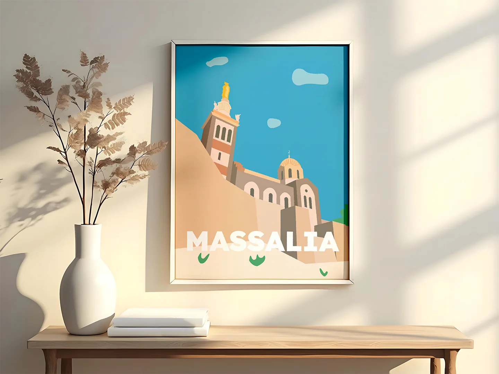

Présentation
Vectoriser une photo personnelle.
Exercice donné par un professeur : vectoriser une photographie afin d'en faire une affiche représentative d'une ville. J'ai choisi de travailler à partir d'une photo que j'ai moi-même prise à Marseille, mettant en valeur la basilique Notre-Dame-de-la-Garde. L'objectif était de retranscrire l'atmosphère marseillaise en explorant les possibilités de l'illustration vectorielle.


Matériel & outils
Plume, calques, formes.
Travail entièrement réalisé sur Adobe Illustrator : outil Plume pour la vectorisation manuelle, calques et formes pour structurer l'image. Le choix des couleurs et des simplifications graphiques permet une affiche épurée et expressive. Adobe Photoshop pour la mise en situation finale.
Résultat
